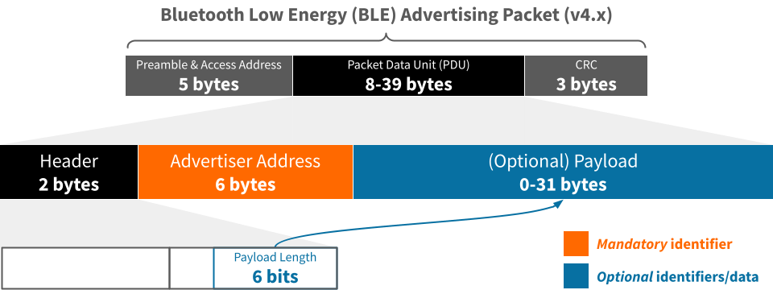

Best practices for BLE advertising data
Structuring Bluetooth Low Energy (BLE) advertising data for interoperability and interpretability
The TL;DR (Too Long; Didn't Read)
Learn how we at reelyActive structure BLE advertising packets based on best practices we've established.
- Established how?
- When we founded reelyActive in 2012, we recognised that BLE would become a de facto global standard for human-scale wireless data exchange, and have been consistently outspoken about best practices.
- Why best practices?
- BLE devices are all around us, representing people, products and places. Best practices foster spontaneous discovery and interpretation, and maximise interoperability.
- Are these observed?
- Not especially. As of 2024, we've seen few standard best practices emerge, hence our motivation to create this tutorial and The InteroperaBLE Identifier!
Best practices breakdown
This tutorial is organised into four parts as follows:
- Part 1 of 4
-
Anatomy of a BLE advertising packet
Just enough structure with just enough space for data - Part 2 of 4
-
Mind the GAP as we GATT started
Strict specifications simplify interoperability - Part 3 of 4
-
Established protocols and standards
Open standards outside the Bluetooth specification - Part 4 of 4
-
The InteroperaBLE Identifier
Our best practice proposal for if-nothing-else-fits interoperability
Links to related tutorials are provided at the end.
Anatomy of a BLE advertising packet Part 1 of 4
Just enough structure with just enough space for a modest amount of data.
- Advertising packet?
- Here we'll examine only the advertising packets that BLE devices can spontaneously broadcast to any devices listening in range.
- Why not other packets?
- Paired (one-to-one) communication between Bluetooth devices is outside the scope of this tutorial, but the best practices for GATT nonetheless apply to both.
The advertising packet structure
The diagram below illustrates the structure of a BLE advertising packet with the Packet Data Unit (PDU) expanded and identifier content highlighted. The preamble, access address and CRC are typically generated/processed automatically, and are irrelevant to this discussion.
The mandatory Advertiser Address
Every BLE advertising packet includes a 48-bit Advertiser Address which uniquely identifies the device that is advertising data. See our best practices guide on identifiers to learn more about this, and other options for interoperable device identification:
-

-
Best Practices for BLE Identifiers
Assigning Bluetooth Low Energy identifiers for interoperability and interpretability.
The optional payload
A BLE advertising packet may include an optional payload of up to 31 bytes for additional data. The Bluetooth Generic Access Protocol (GAP), documented here, affords many payload options. Below are the most common for data.
Advertising data as Service Data
Bluetooth GAP and the advertising packet payload capacity allow for the inclusion of up to 20 bytes of data for a specific 16-bit service class UUID.
| Common Data Type | Name | Max. Data |
|---|---|---|
| 0x16 | Service Data (16-bit UUID) | 20 bytes |
| 0x20 | Service Data (32-bit UUID) | 18 bytes |
| 0x21 | Service Data (128-bit UUID) | 6 bytes |
GATT Service/Characteristic Data
The Bluetooth SIG maintains assigned numbers for GATT Services and Characteristics. It is possible to include service/characteristic data provided it does not exceed the payload capacity. An example is battery, where a device advertises the percentage as a Battery Level characteristic (0x2A19).
Member Service Data
An entity may purchase a 16-bit member service from the Bluetooth SIG and define the service data structure as the wish, either as an open or closed standard. An example is Google Eddystone which has the reserved UUID 0xFEAA and supports several different frame types defined as open standards (). Eddystone-TLM, which includes battery voltage, temperature, tx count and uptime, is presented in detail in Part 3. Another example is Tile which has the reserved UUID 0xFEED but whose specification is proprietary and not published.
Service data offers strictly interpreted representations of many common data types.
Advertising data as Manufacturer Data
Bluetooth GAP and the advertising packet payload capacity allow for the inclusion of up to 22 bytes of use-as-you-please data for manufacturers who register (at no cost) with the Bluetooth SIG and receive a 16-bit company identifier.
| Common Data Type | Name | Max. Data |
|---|---|---|
| 0xff | Manufacturer Specific Data | 22 bytes |
For instance, Espruino device users may use the manufacturer's company identifier (0x0590) to send any data as a JSON string, for convenience. This is presented in detail in Part 3.
Manufacturer data affords full freedom for the representation of data, constrained only by the payload capacity.
Advertising data as (other) Common Data
Bluetooth GAP specifies other common data types which may be relevant, a subset of which are listed below.
| Common Data Type | Name | Max. Data |
|---|---|---|
| 0x08 | Shortened Local Name | 22 bytes |
| 0x09 | Complete Local Name | 22 bytes |
| 0x19 | Appearance | 2 bytes |
| 0x24 | URI | 22 bytes |
| 0x31 | Encrypted Advertising Data | 22 bytes |
For instance, a Local Name type could be used to represent the name of the device (or an associated person, product or place) as a short string of characters.
Mind the GAP as we GATT started Part 2 of 4
Observe the Bluetooth Specification whenever possible to maximise interoperability.
- What's GAP?
- The Generic Access Protocol (GAP) defines the basic requirements of a Bluetooth device, including behaviours and methods.
- What's GATT?
- The Generic ATTribute Profile (GATT) establishes common operations and a framework for data transportation and storage.
Data-as-a-Service
How to use GATT services and characteristics in an advertising packet.
The following section presents how open standards outside the Bluetooth Specification can be used in the absence of an appropriate Service/Characteristic to represent the data.
Established protocols and standards Part 3 of 4
Reinforce existing open standards before creating yet another standard.
- Whose standards?
- Some companies offer their member service and/or company code as an open standard for others to use.
- Can I do that too?
- Yes, you can register with the Bluetooth SIG for a company code (free) or 16-bit Member Service UUID (paid) and publish your own open standard, or keep it private.
Member Services (16-bit UUID)
Eddystone-TLM.
Manufacturer Specific Data
Espruino & DirAct.
The following section presents the InteroperaBLE Identifier as an if-nothing-else-fits option for representing data in a BLE advertising packet.
The InteroperaBLE Identifier Part 4 of 4
Leverage existing standards to represent data in an interoperable way.
- What's the purpose?
- To provide a means of identification that can be interpreted by all platforms and readily translated into a URL for potential association with a digital twin.
- What kind of data?
- The InteroperaBLE Identifier is well suited to boolean data (true/false), Unicode characters (ex: emoji) and anything that completes a URI/URL.
The InteroperaBLE Identifier for Data
See our Best Practices for BLE Identifiers tutorial for an introduction to the InteroperaBLE Identifier with regards to its primary purpose: identification.
-
-
Best Practices for BLE Identifiers
Part 4: The InteroperaBLE Identifier.
In addition to interoperable identification, the InteroperaBLE Identifier can also encapsulate data in its Entity UUID and Instance ID, which is presented next.
-

-
The InteroperaBLE Identifier
An open specification by reelyActive to maximise the interoperability of radio-identifiers.
Moreover, all defined InteroperaBLE Identifiers are interpreted by our /advlib-interoperable open source interpreter module which is included in our Pareto Anywhere open source IoT middleware.
Where to next?
Continue exploring our open architecture and all its applications.
-

-
reelyActive Developers
Browse all developer documentation and tutorials.
-
Pareto Anywhere
The open source IoT middleware that makes sense of things.
-

-
reelyActive
Together, let's make sense of things.